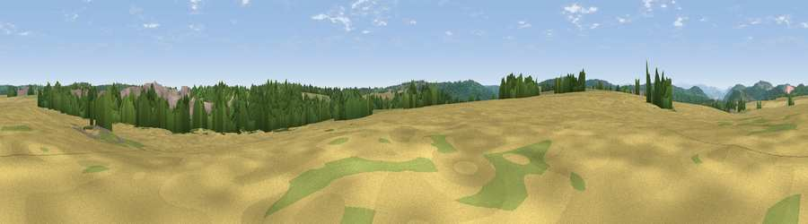

Viewpoint near Clearwell
#28883 in England · top 55% of its area beats it · near Clearwell · access?Where it is
The exact computed spot (SO 56201 06934). Click the marker for map links.
Public access: no public right of way or access land is recorded at this exact spot — it may be on private land. Computed from Natural England's CRoW access layer and OpenStreetMap rights of way — not the legal definitive map. Always verify locally.
The view, rendered

A 360° render of this exact spot computed from the terrain model, tree cover and land cover — summer colours, afternoon light, calibrated against photographs of famous viewpoints. Real trees, hedges and buildings will differ in detail.
The panorama
Grey silhouette: terrain skyline in each direction (720 bearings, Earth curvature and refraction included). Dashed green: skyline with trees (+15 m) and buildings (+8 m) as obstacles. Blue strip: how far the ground is visible on each bearing.
Where the view opens
Wedge length = distance to the farthest visible ground on that bearing (vegetation-aware). Rings at 10, 25 and 50 km.
What fills the view
32% woodland · 27% grassland · 26% cropland · 13% built-up · 1% bare ground
Angular shares of the visible panorama (visual magnitude), not map area. Landscape diversity 0.61 (0–1 Shannon).
Key numbers
More beautiful places nearby
The staircase of upgrades: each row has a higher view potential than everything closer. Driving times are estimates from straight-line distance, calibrated against real road routing — check an actual route before setting out.
| Place | Direction | Drive | Score |
|---|---|---|---|
| Viewpoint near St Briavels | WSW · 2 km | ~4 min | 46.1 |
| Viewpoint near St Briavels | SSW · 3 km | ~8 min | 49.9 |
| Viewpoint near St Briavels | SSW · 4 km | ~9 min | 52.4 |
| Viewpoint near Bream | ESE · 5 km | ~10 min | 58.7 |
| Viewpoint near Hewelsfield | SSE · 5 km | ~11 min | 69.4 |
| Buck Stone | NNW · 6 km | ~12 min | 71.0 |
| Viewpoint near Welsh Newton | NW · 11 km | ~21 min | 72.0 |
| Viewpoint near Goodrich | N · 12 km | ~22 min | 74.0 |
51.75937, -2.63599 · source: osm peak · position refined by local search. Computed location — check access rights before visiting.